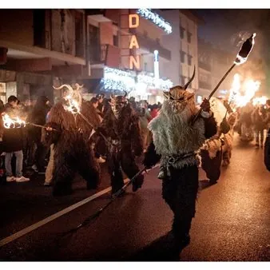

da sab 5 dic a dom 6 dic
La Magia del Natale: San Nicolò e i Krampus
“Al calare della sera, nell’aria frizzante si odono strani suoni di campanacci, in lontananza appare un inquietante corteo; avvolti dal fumo e dal brillare delle fiaccole i terribili Krampus scortano S. Nicolò sulla sua carrozza …”
 Indicazioni
Indicazioni
- Costi e prenotazioni
- Costo non indicato · Prenotazione non indicata
- Programma
- Programma da verificare. Apri la fonte ufficiale per orari e possibili aggiornamenti.
- In caso di maltempo
- Nessuna indicazione specifica pubblicata.
- Note
- Acquisito automaticamente dalla fonte.
L’EVENTO
Descrizione completa
“Al calare della sera, nell’aria frizzante si odono strani suoni di campanacci, in lontananza appare un inquietante corteo; avvolti dal fumo e dal brillare delle fiaccole i terribili Krampus scortano S. Nicolò sulla sua carrozza …” Nel Tarvisiano, come in Carinzia e in Slovenia, San Nicolò vestito da Vescovo, accompagnato dai “Krampus” (diavoli), passa di casa in casa per lodare i bimbi buoni che recitano in ginocchio le preghiere come vuole l’usanza, e ammonisce quelli più birichini. Nel frattempo, per le vie bianche di neve, i ragazzini del paese sfidano i Krampus lanciando palle di neve e qualche petardo. Naturalmente i terribili Krampus hanno la meglio, e paura e divertimento vanno di pari passo.
PROGRAMMA
5 DICEMBRE
FUSINE IN VALROMANA
Ore 13.00 partenza del corteo da Via dei Laghi con soste di casa in casa. Ore 18.00 circa gran falò presso Lago Superiore con tè e
vin brulè.
TARVISIO
Ore 17.00 grande sfilata dei Krampus lungo via Dante, via Vittorio Veneto, via Roma e suggestivo spettacolo in Piazza Unità con l’arrivo di S. Nicolò, che accompagnato dai Krampus, distribuirà il pane dolce a tutti i bambini. Seguiranno le visite di casa in casa.
CAMPOROSSO
Ore 17.00 i Krampus arriveranno dal bosco nei pressi della chiesa di Sant’Egidio Abate, sfileranno lungo via duchessa d’Aosta fino alla chiesa di Santa Dorotea, dove apparirà San Nicolò. Il corteo proseguirà lungo la via principale del paese fino al piazzale dell’ex canonica dove la festa continua con tè, vin brulè e dolci.
TARVISIO CENTRALE
Ore 17.30 apertura chioschi con vin brulé, tè e minestrone. Ore 18.30 i Krampus scenderanno dal bosco e accenderanno un grande
falò in attesa dell’arrivo di San Nicolò, a seguire visita alle famiglie.
RUTTE PICCOLO
Ore 20.30 apparizione dei Krampus dal bosco. Falò, vin brulè e Gulasch.
6 DICEMBRE
COCCAU
Ore 17.30 S. Messa presso la Chiesa di San Nicolò. Al termine arrivo di S. Nicolò e dei Krampus in chiesa. A seguire vin brulè, dolci e minestrone.
CAVE DEL PREDIL
Ore 18.30 i Krampus usciranno dalla miniera e attraverseranno il paese per incontrare San Nicolò e dare inizio al Gran Falò. Vin brulè e cibo nel tendone riscaldato
IL PROGRAMMA
Programma e orari
Appuntamenti raccolti dalle fonti elencate. Dove manca un orario, non è ancora disponibile in questa scheda.
Programma pubblicato
- Ore 13.00 partenza del corteo da Via dei Laghi con soste di casa in casa. Ore 18.00 circa gran falò presso Lago Superiore con tè e
- Ore 17.30 apertura chioschi con vin brulé, tè e minestrone. Ore 18.30 i Krampus scenderanno dal bosco e accenderanno un grande
- Ore 20.30 apparizione dei Krampus dal bosco. Falò, vin brulè e Gulasch.
- Ore 17.30 S. Messa presso la Chiesa di San Nicolò. Al termine arrivo di S. Nicolò e dei Krampus in chiesa. A seguire vin brulè, dolci e minestrone.
- Ore 18.30 i Krampus usciranno dalla miniera e attraverseranno il paese per incontrare San Nicolò e dare inizio al Gran Falò. Vin brulè e cibo nel tendone riscaldato
INFORMAZIONI UTILI
Prima di partire
- Controllare la fonte prima di partire.
ORGANIZZAZIONE